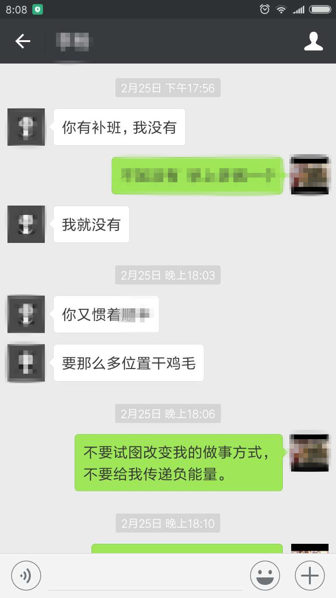

四分钟时间看完，一起认识自己-----分割线-----
少抱怨，少接受负能量。
认识到自己不经意地唉声叹气是我的研究生同门。2012年7月研究生毕业，我进入国企，她出国深造。2013年5月回国在北京小聚，相聚甚欢，她诉说国外的人文趣事，我吐槽工作的感受。突然，她对我说，国企是不是都像你说的那样，在那里把自己的激情都磨没了，一年没见，感觉变化好大啊，读研时你还是非常激情的人，现在却是在不停地抱怨。
我当时真的无地自容，面红耳赤。讲真，读研的时候激情似火，各种充实自己，她也都看在眼里；才工作一年，却在不停地抱怨，没有了之前的气度和自信。
因为她的提醒，我想到了刚工作半年的一件事。“你们怎么能去的那么晚呢？”一句无心的抱怨，敏感的同事却把这话当做对老同事的不尊重，状告到领导。领导狠狠地批评了我，在国企，工作能力可以差点，人情沟通却是非常重要的。直接调离本岗位，这是上班以来吃过最大的亏。
不经意的抱怨惹恼了别人，给自己添了非常大的麻烦，却不自知。同门的点拨，才让我想起这段往事。从那时起，我开始刻意关注自己的“口头禅”，少抱怨，少点负能量。
抱怨会产生心理安慰，加剧拖延。
在不良的工作环境中，人们常常抱团在一起相互抱怨那些破事，从中得到相互心理上的安慰，拖着不去处理令人烦躁的事情，“法不责众”的观念更是加剧这一症状。即便你是个例外，抛弃你的同盟，你不怕他们背后编排你么？脱离大伙认同的组织，你将招来更多人的孤立与冷眼相对，你能受得了么？最好的办法便是起初的你与抱怨的团伙不要产生内心的共鸣。与其都要做，还不如痛痛快快地去做，至少不用给别人留下口是心非的把柄。
抱怨希望得到重视和理解，殊不知却是在损坏相互的感情。
爱抱怨的人希望得到别人的关注，把抱怨当作沟通交流的一种方式，期望得到对方的理解和共鸣。但这是一个误区，你传递给别人的除了说话内容，更多的是你的情绪，你的这些负面情绪让别人手足无措，激发别人内心的不满与怨气。很多人并不喜欢自己抱怨，就会和你远离，和你疏远。你的抱怨并没有吸引更多的朋友，而是将朋友一步步地推向远端。朋友，是互利互惠的，他们不是亲人，更不会长期成为你语言和情绪的垃圾桶。
抱怨会改变自己的能量场，吸引坏的事情接踵而来。
有没有这样的感受，当一件坏事情发生时，你不希望其他的事情也会出现问题，可总是事与愿违。你为什么总是能够“心想事成”。是因为你关注什么，你的能量就会流向什么，抱怨只会带来更多的消极能量。你脑中的任何一条思想，都是一种暗示，头脑是根据情境工作的，“我很倒霉”便会在脑海中创造了“倒霉”的心理图像以及“倒霉”的心理暗示。“同质相吸”的吸引力法则会给你生活上诸多的教训。
喜欢抱怨，你能找到的仅是倾诉对象，找认同感，找到为自己开脱的外部理由。有人会同情你，但却帮不了你改变现状，得到的安慰只能暂时麻醉自己。
少抱怨，少接受负能量。
1、从有意识地改变自己口头禅做起。无论是多么地想脱口而出，请闭嘴，观察内心的万马奔腾。语言的能量无限大，有损气质的语言也将会损耗你的人格气质。
“2、假喜真干”你值得拥有。对于烦躁的事情，请假装喜欢，并付诸行动，这样的态度会让你的兴趣变成真实。装有某种好心情，能够帮我们获得这种心情的感受，你的抱怨也就无处可藏。
3、开启内心的消音键。当下感知的焦虑、烦躁等想表达出的抱怨情绪，请尝试推迟抱怨的时间。将注意力转移至伴随想象而出现的肢体感受上，将主观想象的内心感受转移到客观存在的身体感受，内心想要急切抱怨的表达也会逐渐消失。
4、无法控制的抱怨换一种方式表达。有时说出内心的感受也是减压的方式，但不妨用诙谐幽默或很夸张的方式。比如你着急上班，有人霸道地超车，你可以想象这个人真的有急事，或是想象他是一条蚯蚓，见缝就钻。有了搞笑的想法，抱怨的情绪自然会减轻很多。
5、远离负能量满满的人。他们会一点点地损害你对生活的信心，减少你身上的正能量，会引诱你内心的抱怨，潜移默化地改变你的价值观，腐蚀我们的正气。
喜欢抱怨的人，只能说明你承受生活的压力相对较弱，因为负能量也是需要积累的。把自己最好的一面送给别人，别人才会把最好的一面转向自己。外面的世界，是我们自己的投影。